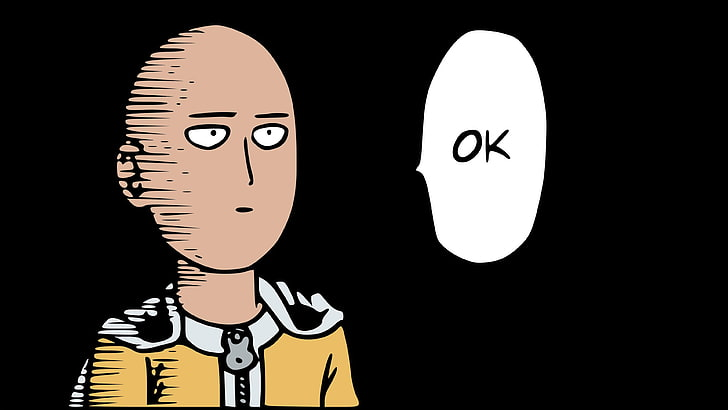

- Back
- Horror
- Home
Orasan
Noong bago mag eleksyon noong 2016, may isang babae ang biglang namatay.... . Umakyat sya sa langit at laking gulat nya dahil pagdating nya don isang napaka laking pader na punong puno ng napakaraming orasan ang bumungad sa kaniya... . Habang namamangha sya sa dami ng orasan isang anghel ang lumapit sa kanya... . Anghel : (nakangiti) Maligayang pagdating dito sa langit...!!! . Babae : Salamat...!! Ahmmm...!!! Maaari ba magtanung...!!!? Bakit ang daming orasan jan...!!? . Anghel : Yan..!!! Yan ang orasan ng pagsisinungaling...!! Bawat isang tao sa lupa may isang orasan dito sa langit..!! At Kung gaano ka kadalas mag sinungaling sa lupa ganun din kadalas umikot ang kamay ng orasan mo dito sa langit....!!! . Babae : Aaah...!! Ganun ba yun..!!? Eh yang malaking orasan na yan (tinuturo ang malaking orasan) kanino yan..!!? . Anghel : Yan ang orasan ni Sta. Theresa..!! Kahit kailan hindi pa gumalaw ang kamay ng orasan na yan..!!! Kaya ibig sabihin ni kahit kailan hindi pa nag sinungaling si Sta. Theresa sa lupa...!!! . Babae : Aaah..!!! By the way..!! Asan pala ang mga orasan ng mga tumatakbong politiko don samin...!!!? . Anghel : Nasa opisina namin....!!! . Babae : Bakit..!!!? . Anghel : ginawa naming... "Electric fan"